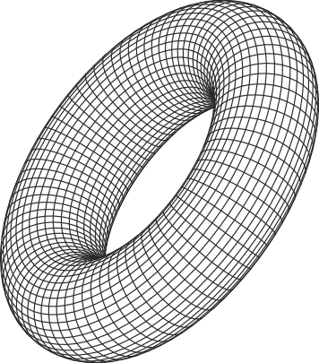
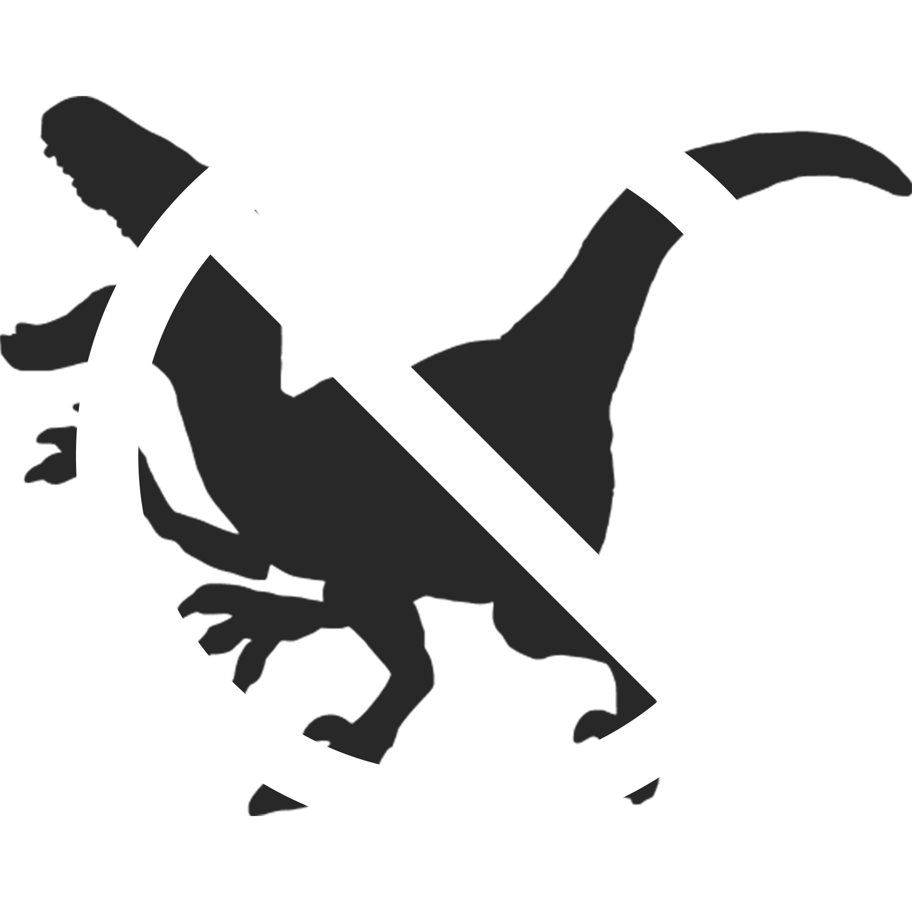

LLEVA TU MARCA A OTRO NIVEL
¿Aún no sabes cómo aumentar tus ventas en redes sociales?
Te ayudo a potenciar tu negocio con estrategias de marketing digital y gestión profesional de redes.
Juntos definimos cuándo y cómo invertir en publicidad onlien para atraer más clientes y hacer crecer tus resultados.
¡Hablemos sobre cómo impulsar tu negocio y aumentar tus ventas en redes sociales!


Tu cliente YA esta en redes sociales, y tu negocio?

Hoy mas que nunca, las empresas ya no pueden ignorar que sus clientes pasan horas cada dia en redes sociales. Estas son el punto de encuentro entre las marcas y sus clientes.
No se trata solo de estar presente: se trata de estrategia, contenido y conexión.
Las empresas que gestionan
profesionalmente sus redes pueden aumentar sus ventas hasta un 28% frente a quienes no las utilizan de forma planificada.
Cada persona que invierte 2 horas diaras en redes sociales representa una oportunidad:
TU MARCA PUEDE
ESTAR ALLI
En otras palabras: tus clientes ya están en redes sociales.
Mi trabajo es ayudarte a que tu marca sea parte
de esa conversación y convierta esa presencia en
RESULTADOS
REALES
ADVERTENCIA
Mi trabajo está libre de Velociraptors
Han pasado
días desde el último incidente.
Tu marca necesita algo más que imágenes bonitas:
necesita una
identidad poderosa, coherente y diseñada con intención.
Como diseñador gráfico freelance profesional, busco desarrollar soluciones visuales que fortalezcan tu comunicación,
aumenten tu presencia digital y generen confianza en cada punto de contacto.
Trabajo diseño gráfico para empresas que buscan destacar en un mercado competitico con piezas claras, modernas y alineadas
a sus objetivos. Si estas buscando contratar un diseñador gráfico que comprenda tu vision y la convierta en resultado, puedo
ayudarte a crear desde contenido para redes sociales hasta branding completo y materiales para marketing.
Tu marca necesita un diseño con
ESTRATEGIA
PROPOSITO
IMPACTO
Diseño para que tu marca sea inolvidable.
¿Quieres conocer más de mi trabajo?
Haz click aquí